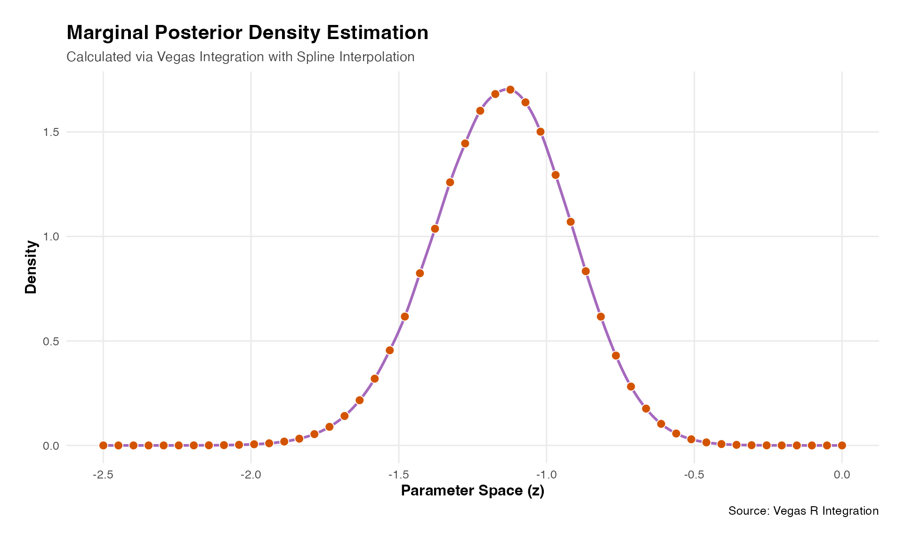

Quickstart
Using Rcpp to write the log posterior function will almost surely be faster, perhaps many times faster, than an R function even when vectorized. Examples of the timing comparison are below.
Example log posterior functions are given below using two Rcpp linear algebra libraries, RcppArmadillo and RcppEigen. These libraries have different pros and cons. In short RcppArmadillo has some built-in parallelization while RcppEigen does not, but both are highly efficient in their own way. RcppEigen works well with RcppParallel which can be more problematic with RcppArmadillo.
Model Formulation
Data set
library(vegasr)
vegas_initialize()
#> successfully initialized vegas version: 6.4.1
thedata<-vegasr:::fn_create_data_1(99999) # a list of y and treat as matrices
# this function is in vegasr/R/fn_internal.R### Now use VEGAS
theta<- matrix(data=rep(0.1,length=4*6), ncol = 6)
vegasr:::fn_log_post_1(theta, thedata$y, thedata$treat,.0, 1.0)
#> [1] -145.933 -145.933 -145.933 -145.933
# this function is in vegasr/R/fn_internal.R
vegasr::arma_fn_log_post_1(theta, thedata$y, thedata$treat,0.0, 1.0)
#> [,1]
#> [1,] -145.933
#> [2,] -145.933
#> [3,] -145.933
#> [4,] -145.933
# this function is in vegasr/src/fns_arma.cpp
vegasr::eigen_fn_log_post_1(theta, thedata$y, thedata$treat,0.0, 1.0)
#> [1] -145.933 -145.933 -145.933 -145.933
# this function is in vegasr/src/fns_eigen.cpplibrary(vegasr)
# now setup python environment
vegas_initialize() # this needed called once per session after library(vegas)
#> vegas is already initialized
#> NULL
library(tictoc)
tic()
result_logEv<-vegasBayesEvidence(f=vegasr:::fn_log_post_1,
lower=c(-1,-1,-1,-1,0.0001,0.0001),
upper=c(1,1,1,1,1,1),
nitn_warm = 5, neval_warm = 1e5,
nitn = 5, neval = 1e5,
errTol=0.1,maxIter=10,seed=99999,nsearch=10000,
extra_args=list(
y=thedata$y,treat=thedata$treat,shiftby=0,uselog=1.))
toc()
#> 16.539 sec elapsed
cat("log evidence = ",result_logEv,"\n")
#> log evidence = -129.4151
tic()
result_logEv<-vegasBayesEvidence(f=vegasr:::arma_fn_log_post_1,
lower=c(-1,-1,-1,-1,0.0001,0.0001),
upper=c(1,1,1,1,1,1),
nitn_warm = 5, neval_warm = 1e5,
nitn = 5, neval = 1e5,
errTol=0.1,maxIter=10,seed=99999,nsearch=10000,
extra_args=list(
y=thedata$y,treat=thedata$treat,shiftby=0,uselog=1.))
toc()
#> 12.914 sec elapsed
cat("log evidence = ",result_logEv,"\n")
#> log evidence = -129.4151
tic()
result_logEv<-vegasBayesEvidence(f=vegasr::eigen_fn_log_post_1,
lower=c(-1,-1,-1,-1,0.0001,0.0001),
upper=c(1,1,1,1,1,1),
nitn_warm = 5, neval_warm = 1e5,
nitn = 5, neval = 1e5,
errTol=0.1,maxIter=10,seed=99999,nsearch=10000,
extra_args=list(
y=thedata$y,treat=thedata$treat,shiftby=0,uselog=1.))
toc()
#> 251.773 sec elapsed
cat("log evidence = ",result_logEv,"\n")
#> log evidence = -129.4151
tic()
result_logEv<-vegasBayesEvidence(f=vegasr::eigen_fn_log_post_1_par,
lower=c(-1,-1,-1,-1,0.0001,0.0001),
upper=c(1,1,1,1,1,1),
nitn_warm = 5, neval_warm = 1e5,
nitn = 5, neval = 1e5,
errTol=0.1,maxIter=10,seed=99999,nsearch=10000,
extra_args=list(
y=thedata$y,treat=thedata$treat,shiftby=0,uselog=1.))
toc()
#> 22.199 sec elapsed
cat("log evidence = ",result_logEv,"\n")
#> log evidence = -129.41512. Find Marginal
tbc
tic()
mymarg<-vegasBayesPosterior(f=vegasr::eigen_fn_marg_1_1_par,
lower=c(-1,-1,-1,0.0001,0.0001),
upper=c(1,1,1,1,1),
nitn_warm = 10, neval_warm = 10000,
nitn = 10, neval = 10000,
errTol=1,maxIter=10,seed=99999,nsearch=10000,
log_evidence = result_logEv,
extra_args=list(
y=thedata$y,treat=thedata$treat,shiftby=0,uselog=1.,z=-1.))
cat("Marginal density f(z) at z = -1. = ",mymarg,"\n")
#> Marginal density f(z) at z = -1. = 1.412642
toc()
#> 1.51 sec elapsed
myz<-seq(-2.5,-0.,len=no_den_pts)
tic("") # Start timer with a label
f_z<-rep(0,length(myz));
i<-1;
for(z in myz){
f_z[i]<-vegasBayesPosterior(f=vegasr::eigen_fn_marg_1_1_par,
lower=c(-1,-1,-1,0.0001,0.0001),
upper=c(1,1,1,1,1),
nitn_warm = 10, neval_warm = 10000,
nitn = 10, neval = 10000,
errTol=1,maxIter=10,seed=99999,nsearch=10000,
log_evidence = result_logEv,
extra_args=list(
y=thedata$y,treat=thedata$treat,shiftby=0,uselog=1.,z=z))
i<-i+1
}
toc() # Stops timer and prints
#> : 76.763 sec elapsed